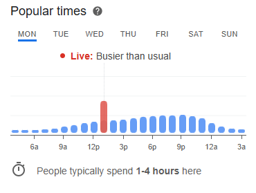

If you’re passionate about poker or planning a casino trip, Rivers Casino poker rooms are among the hottest destinations in the Midwest and Pennsylvania right now. This detailed, real-information guide walks you through the poker rooms in Des Plaines, Chicago, and Pittsburgh, explains the games you’ll find, and shows how you can legally play real-money casino games online as well. Ready to dive in? Let’s shuffle up and deal.
🧠 Rivers Casino Poker Room Overview
Rivers Casinos are operated by Rush Street Gaming and are known for their large casino floors, variety of table games, and vibrant poker scenes. They are open to players aged 21+ and offer multiple ways to enjoy poker — from cash games to tournaments. Exact details vary by location, which we’ll cover below with real source backing.
🃏 Rivers Casino Des Plaines Poker Room (Illinois)
📍 Location & Setup
The Des Plaines poker room is part of the casino near Chicago. It opened as part of a major expansion that added a dedicated poker space with 22 tables.
🎲 Games and Tournaments
The poker room features plenty of table games where you can play popular poker variants such as Texas Hold’em and Omaha in limit, pot-limit, and no-limit formats.
There are also regular poker tournaments. For example, a seasonal No-Limit Texas Hold’em tournament runs with structured blinds and set buy-ins, giving players an organized competitive option on top of cash games.
🧠 Tips Before You Go
-
The poker room can get very busy on weekends, so joining a waitlist early via the casino rewards app (Bravo Poker Live) can save you long waits.
-
Even if you’re not playing poker, Rivers Des Plaines offers slots, table games, and a BetRivers Sportsbook for sports betting.
🃏 Rivers Casino Chicago Poker Room
Despite some player chatter online, Rivers Casino Chicago does not currently have a dedicated poker room like the ones in Des Plaines or Pittsburgh. Players still enjoy table poker games against dealers, but there isn’t a separate full-service poker room with waitlists or multiple tables like the other locations.
👉 People visiting Chicago for poker often go to Des Plaines, which is about 20 minutes from O’Hare Airport, as that’s the closest full poker room to Chicago proper.
🃏 Rivers Casino Pittsburgh Poker Room (Pennsylvania)
📍 Location & Hours
Rivers Casino Pittsburgh offers a full poker room with 30 tables, making it one of the city’s premier poker destinations.

Hours vary through the week, but generally:
-
10:00 AM – 6:00 AM Monday through Thursday
-
24 hours Friday through Sunday
(subject to change seasonally)
🎲 Poker Games & Play
This poker room regularly features:
-
1/3 No-Limit Texas Hold’em and higher
-
1/3 Pot-Limit Omaha and higher
Cash games and occasional tournaments are ongoing.
It has seen record jackpots, including a historic bad-beat jackpot of over $1.2 million.
🍀 Rush Rewards Program
Pittsburgh’s Rivers also runs a loyalty program where players earn points while playing and can redeem them for benefits like free play or comps.
🎯 Poker Tournaments at Rivers Casino
While cash games run daily, many Rivers locations also organize scheduled poker tournaments throughout the year. Des Plaines has seasonal No-Limit Hold’em tourneys, while Pittsburgh adds monthly or weekly events to keep players engaged in both cash and competitive play.
If tournaments are your main goal, checking the specific casino’s official calendar or contacting the poker host ahead of your visit is always recommended.
🧑⚖️ Is Gambling Legal Near Rivers Casino?
In Pennsylvania
Both land-based poker rooms and online casinos are legal in Pennsylvania, regulated by the Pennsylvania Gaming Control Board. Legal online casinos have been operational since 2019 and include many reputable platforms for real-money play.
In Illinois
Land-based casino gambling, including poker rooms like Des Plaines, is legal in Illinois. However, real-money online casino play is not yet legalized statewide online casino laws are still under development.
In Florida
In contrast, Florida does not currently offer regulated online casino games, although some offshore options exist (not recommended) because they are unregulated and pose safety issues.
📱 Best Legal Online Casinos for Rivers Casino Players (USA)
If you want to play online casino games for real money (slots, table games, live dealers, even online poker where licensed), here are the states where it’s currently legal in the United States:
✔ Pennsylvania
✔ New Jersey
✔ Connecticut
✔ Michigan
✔ Rhode Island
✔ West Virginia
✔ Delaware
(These states regulate real-money online casinos in 2025.)
In these states, operators like BetMGM, DraftKings Casino, and BetRivers Online Casino offer real-money play but you must be physically located inside the state to wager online due to strict geolocation laws. Wikipedia
Important: Florida, Texas, and many other states do not yet permit legal online casinos.
❓ FAQs
Q: What’s the biggest Rivers Casino poker room?
👉 Pittsburgh’s has the largest dedicated poker facility with around 30 tables.
Q: Does Rivers Casino Chicago have a poker room?
👉 No Chicago’s facility doesn’t currently have a dedicated poker room, unlike Des Plaines or Pittsburgh.
Q: Can I play online casino games if I visit a Rivers Casino?
👉 Only in states where online gambling is legal (e.g., PA, NJ, MI). You’ll need to be inside that state and of legal age.
Q: Is poker legal in Pennsylvania?
👉 Yes — both live poker rooms and regulated online poker platforms operate legally within the state.
🏁 Final Thoughts
Whether you’re a casual player looking to enjoy a card game with friends or a serious poker enthusiast targeting tournaments and big jackpots, Rivers Casino poker rooms offer real-money play, exciting atmospheres, and plenty of options. Pair that with legal online casino choices available in key U.S. states, and you’ve got a full spectrum of ways to play poker today.